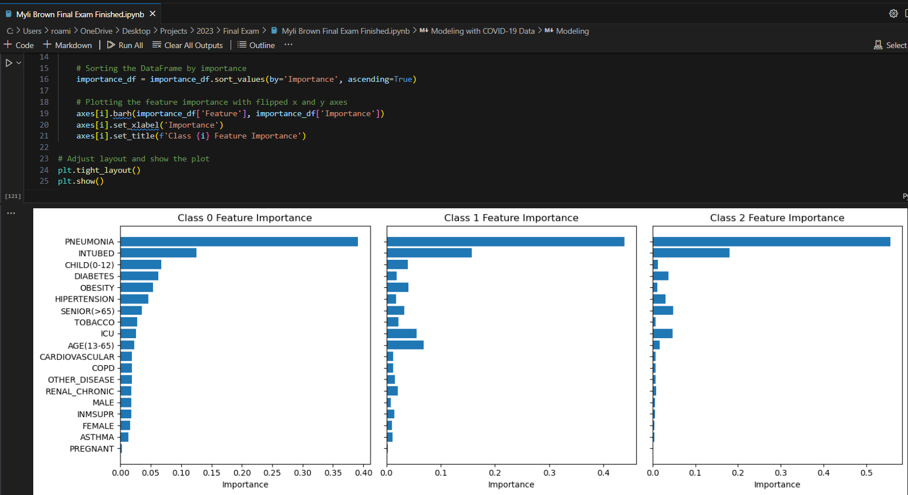
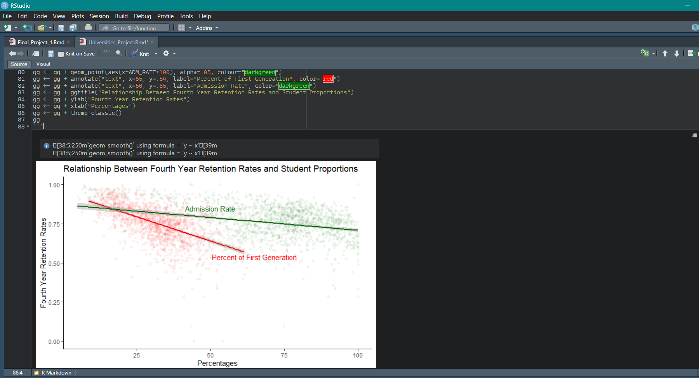
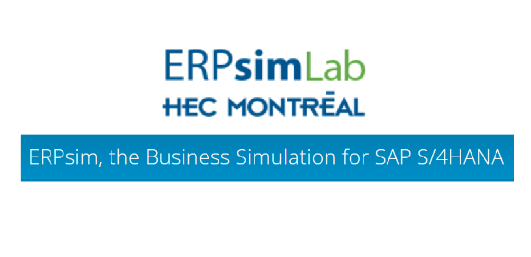
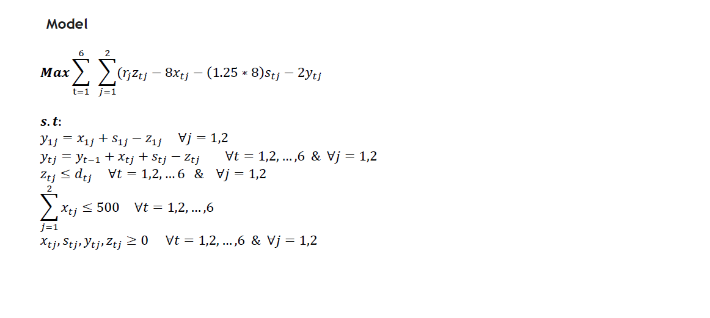

Fall 2025
Machine Learning Projects
A semester-long series implementing core ML algorithms in Python — from Adaline and Perceptron through CNNs and reinforcement learning with SARSA.
Perceptron / SVMMultilayer PerceptronCNNSARSA
A sampling of coursework, competitions, and independent projects in analytics and data science.
A semester-long series implementing core ML algorithms in Python — from Adaline and Perceptron through CNNs and reinforcement learning with SARSA.
 Fall 2023
Fall 2023
Web-scraped a directory of abandoned locations, cleaned the data in Python, then built an interactive Tableau dashboard with a map, list view, and embedded search.

Fall 2023Exploratory data analysis and Random Forest modeling of COVID-19 case data, built out in a Jupyter notebook.
 Spring 2024
Spring 2024
Group project ("Hog Bank") building a relational banking database with a management interface for employees to handle customer accounts and transactions.

Fall 2022An R Markdown analysis exploring and visualizing a dataset of U.S. universities.

Fall 2024Ran a simulated cereal manufacturing company in SAP as a team of four, making sourcing, pricing, and production decisions across four rounds of competition — finishing 2nd in the class.

Fall 2024Formulated and solved production-planning optimization problems in Python using the Pyomo solver.